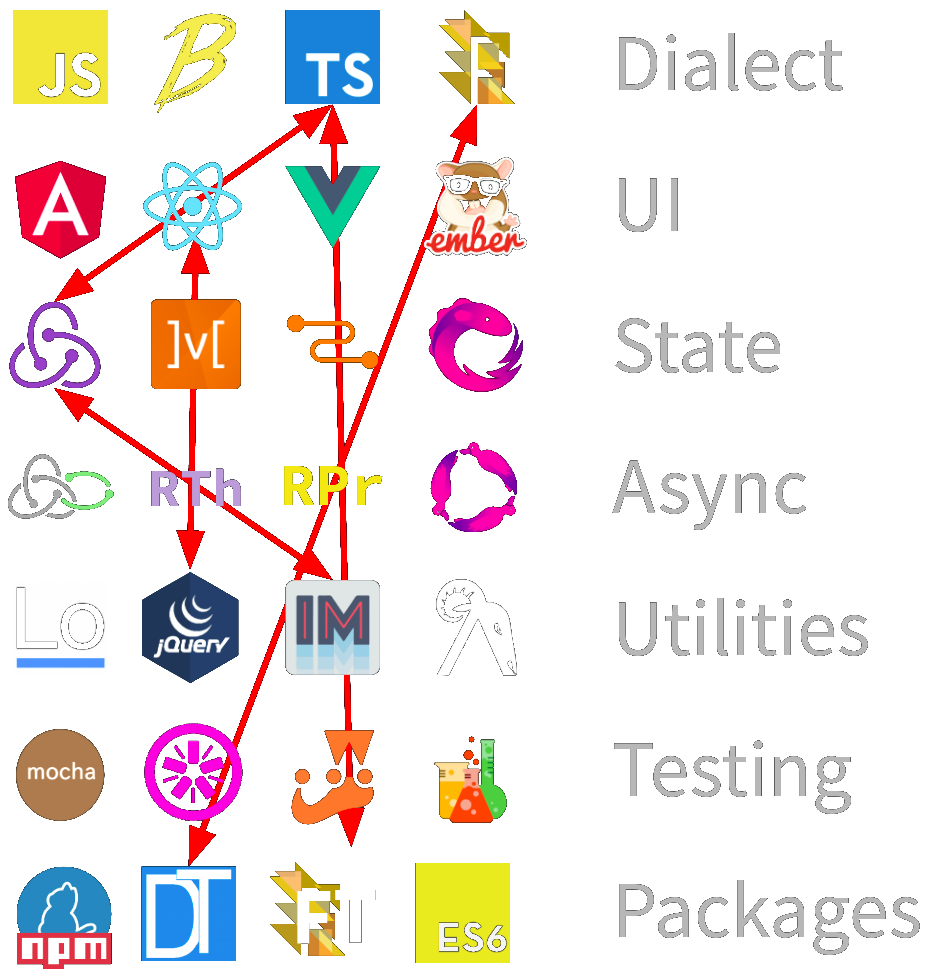
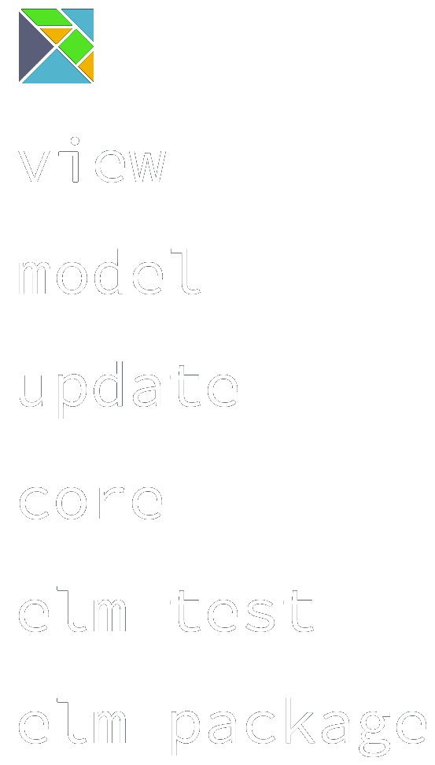
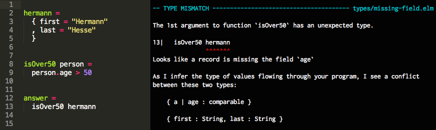
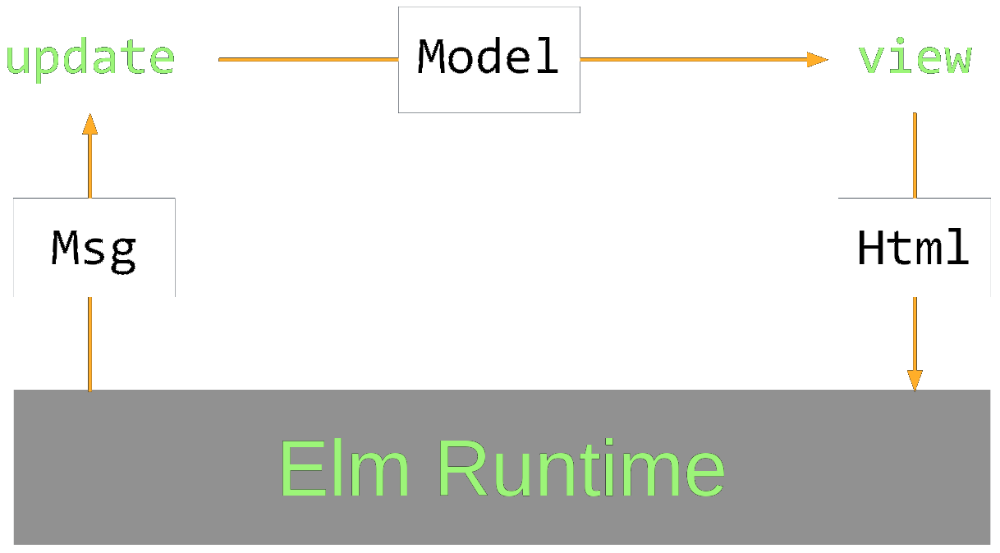
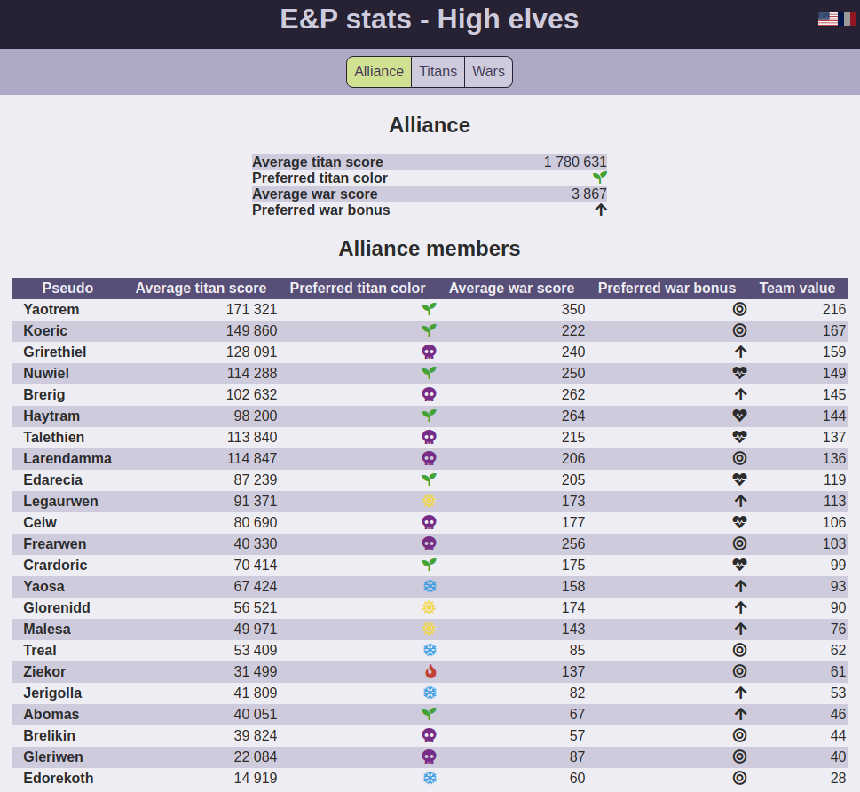

Elm Rex
Elm Rex
An experience with mixed results
Plan
- What is Elm
- The app
- How Elm fares
- Q/A
Developed at NoRedInk
Elm Compiles to JS
Comprehensive


A functional language
- Functions are idempotent
- No side-effects
- No runtime errors
- Semver is imposed
- A helpful compiler
- Functions are curry-able
Helpful compiler


A sound type-system
- Strong
- Structural
- No null
- Implicit OR explicit
Records
type alias Person = { name: String, dob: Date }
-- Explicit typing
getAge : Person -> Int
-- Implicit typing
getAge { dob } = ...
-- Semi-implicit typing
getAge : { whatever | dob: Date }
Union types
type Sorting
= Ascending String
| Descending String
| Randomized
case sorting of
Ascending column -> -- sort
Descending column -> -- sort
Randomized -> -- sort
Tuples
findCrossingPoint : Line -> Line -> ( Int, Int )
point = findCrossingPoint line1 line2
abscissa = Tuple.first point
The flux pattern
Was formerly known as event sourcing before Facebook "renamed" it.
Uni-directional data flow
Recap of elm's promises
- No runtime errors
- Good performance
- Easy maintenance
- Easy debugging
- Enjoyable
The app
Live demo!
Evaluation process
- Language
- Ecosystem
- App needs
- My personal experience
Evaluation method - language
| Criteria | Evaluated? |
|---|---|
| Syntax | |
| Productivity | |
| Upgrade-ability | |
| Readability | |
| Documentation | |
| Bundle size | |
| Cost of performance | |
| Debugging | |
| Tests |
Bundle size
Hello world
~50LoC => 19K => 7K
hello
├── [103K] app.js
├── [ 19K] app.min.js
├── [7.2K] app.min.js.gzip
├── [ 233] elm.json
├── [ 275] index.html
└── [1.0K] Main.elm
ep-stats
~2500 + ~800LoC => 150K => 47K
dist/
├── [ 73K] app.css
├── [305K] app.js
├── [ 54K] app.min.css
├── [ 12K] app.min.css.gzip
├── [ 89K] app.min.js
├── [ 28K] app.min.js.gzip
├── [4.0K] assets
│ ├── [130K] fa-solid-900.eot
│ ├── [477K] fa-solid-900.svg
│ ├── [130K] fa-solid-900.ttf
│ ├── [ 62K] fa-solid-900.woff
│ ├── [ 49K] fa-solid-900.woff2
│ └── [ 791] icon.png
└── [6.1K] index.html
Evaluation method - ecosystem
| Criteria | Evaluated? |
|---|---|
| Modules | |
| Package management | |
| IDE integration | |
| Tooling | |
| Community | |
| Module authoring |
Evaluation method - app needs
| Criteria | Evaluated? |
|---|---|
| Routing | |
| Serialization | |
| State management | |
| HTTP | |
| Oauth | |
| Logging | |
| I18N | |
| L10N |